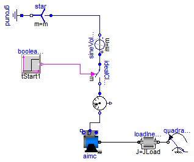
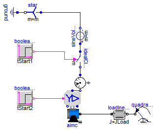
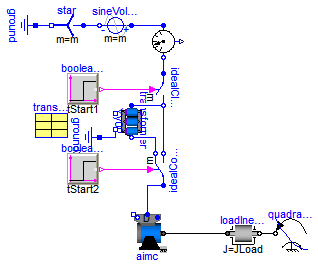
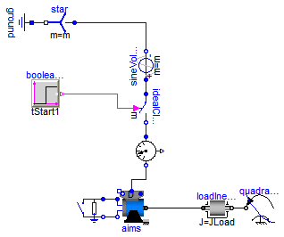
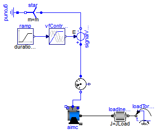
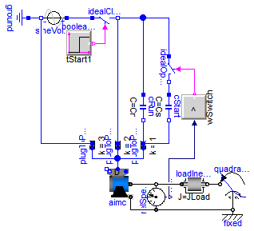
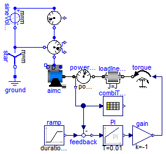

Extends from Modelica.Icons.ExamplesPackage (Icon for packages containing runnable examples).
| Name | Description |
|---|---|
| Test example: AsynchronousInductionMachineSquirrelCage direct-on-line | |
| Test example: AsynchronousInductionMachineSquirrelCage Y-D | |
| Test example: AsynchronousInductionMachineSquirrelCage transformer starting | |
| Test example: AsynchronousInductionMachineSlipRing | |
| Test example: AsynchronousInductionMachineSquirrelCage with inverter | |
| AsynchronousInductionMachineSquirrelCage Steinmetz-connection | |
| Test example: AsynchronousInductionMachineSquirrelCage with losses |
 Modelica.Electrical.Machines.Examples.AsynchronousInductionMachines.AIMC_DOL
Modelica.Electrical.Machines.Examples.AsynchronousInductionMachines.AIMC_DOL
Extends from Modelica.Icons.Example (Icon for runnable examples).
| Type | Name | Default | Description |
|---|---|---|---|
| Voltage | VNominal | 100 | Nominal RMS voltage per phase [V] |
| Frequency | fNominal | 50 | Nominal frequency [Hz] |
| Time | tStart1 | 0.1 | Start time [s] |
| Torque | TLoad | 161.4 | Nominal load torque [N.m] |
| AngularVelocity | wLoad | 1440.45*2*Modelica.Constants... | Nominal load speed [rad/s] |
| Inertia | JLoad | 0.29 | Load's moment of inertia [kg.m2] |
model AIMC_DOL
"Test example: AsynchronousInductionMachineSquirrelCage direct-on-line"
extends Modelica.Icons.Example;
constant Integer m=3 "Number of phases";
parameter Modelica.SIunits.Voltage VNominal=100
"Nominal RMS voltage per phase";
parameter Modelica.SIunits.Frequency fNominal=50 "Nominal frequency";
parameter Modelica.SIunits.Time tStart1=0.1 "Start time";
parameter Modelica.SIunits.Torque TLoad=161.4 "Nominal load torque";
parameter Modelica.SIunits.AngularVelocity wLoad(displayUnit="1/min")=1440.45*2*Modelica.Constants.pi/60
"Nominal load speed";
parameter Modelica.SIunits.Inertia JLoad=0.29 "Load's moment of inertia";
Machines.BasicMachines.AsynchronousInductionMachines.AIM_SquirrelCage
aimc;
Machines.Sensors.CurrentQuasiRMSSensor currentQuasiRMSSensor;
Modelica.Electrical.MultiPhase.Sources.SineVoltage sineVoltage(
final m=m,
freqHz=fill(fNominal, m),
V=fill(sqrt(2/3)*VNominal, m));
Modelica.Electrical.MultiPhase.Basic.Star star(final m=m);
Modelica.Electrical.Analog.Basic.Ground ground;
Modelica.Blocks.Sources.BooleanStep booleanStep[m](each startTime=tStart1);
Modelica.Electrical.MultiPhase.Ideal.IdealClosingSwitch idealCloser(final m=m);
Modelica.Mechanics.Rotational.Components.Inertia loadInertia(
J=JLoad);
Modelica.Mechanics.Rotational.Sources.QuadraticSpeedDependentTorque
quadraticLoadTorque(
w_nominal=wLoad,
TorqueDirection=false,
tau_nominal=-TLoad,
useSupport=false);
Machines.Utilities.TerminalBox terminalBox(terminalConnection="D");
equation
connect(star.pin_n, ground.p);
connect(sineVoltage.plug_n, star.plug_p);
connect(sineVoltage.plug_p, idealCloser.plug_p);
connect(booleanStep.y, idealCloser.control);
connect(idealCloser.plug_n, currentQuasiRMSSensor.plug_p);
connect(terminalBox.plug_sn, aimc.plug_sn);
connect(terminalBox.plug_sp, aimc.plug_sp);
connect(terminalBox.plugSupply, currentQuasiRMSSensor.plug_n);
connect(loadInertia.flange_b, quadraticLoadTorque.flange);
connect(aimc.flange, loadInertia.flange_a);
end AIMC_DOL;
Modelica.Electrical.Machines.Examples.AsynchronousInductionMachines.AIMC_YD
Extends from Modelica.Icons.Example (Icon for runnable examples).
| Type | Name | Default | Description |
|---|---|---|---|
| Voltage | VNominal | 100 | Nominal RMS voltage per phase [V] |
| Frequency | fNominal | 50 | Nominal frequency [Hz] |
| Time | tStart1 | 0.1 | Start time [s] |
| Time | tStart2 | 2.0 | Start time from Y to D [s] |
| Torque | TLoad | 161.4 | Nominal load torque [N.m] |
| AngularVelocity | wLoad | 1440.45*2*Modelica.Constants... | Nominal load speed [rad/s] |
| Inertia | JLoad | 0.29 | Load's moment of inertia [kg.m2] |
model AIMC_YD
"Test example: AsynchronousInductionMachineSquirrelCage Y-D"
extends Modelica.Icons.Example;
constant Integer m=3 "Number of phases";
parameter Modelica.SIunits.Voltage VNominal=100
"Nominal RMS voltage per phase";
parameter Modelica.SIunits.Frequency fNominal=50 "Nominal frequency";
parameter Modelica.SIunits.Time tStart1=0.1 "Start time";
parameter Modelica.SIunits.Time tStart2=2.0 "Start time from Y to D";
parameter Modelica.SIunits.Torque TLoad=161.4 "Nominal load torque";
parameter Modelica.SIunits.AngularVelocity wLoad(displayUnit="1/min")=1440.45*2*Modelica.Constants.pi/60
"Nominal load speed";
parameter Modelica.SIunits.Inertia JLoad=0.29 "Load's moment of inertia";
Machines.BasicMachines.AsynchronousInductionMachines.AIM_SquirrelCage
aimc;
Machines.Sensors.CurrentQuasiRMSSensor currentQuasiRMSSensor;
Modelica.Electrical.MultiPhase.Sources.SineVoltage sineVoltage(
final m=m,
freqHz=fill(fNominal, m),
V=fill(sqrt(2/3)*VNominal, m));
Modelica.Electrical.MultiPhase.Basic.Star star(final m=m);
Modelica.Electrical.Analog.Basic.Ground ground;
Modelica.Blocks.Sources.BooleanStep booleanStep[m](each startTime=tStart1);
Modelica.Electrical.MultiPhase.Ideal.IdealClosingSwitch idealCloser(
final m=m);
Machines.Utilities.SwitchYD switchYD;
Modelica.Blocks.Sources.BooleanStep booleanStepYD[m](each startTime=
tStart2);
Modelica.Mechanics.Rotational.Components.Inertia loadInertia(
J=JLoad);
Modelica.Mechanics.Rotational.Sources.QuadraticSpeedDependentTorque
quadraticLoadTorque(
w_nominal=wLoad,
TorqueDirection=false,
tau_nominal=-TLoad,
useSupport=false);
equation
connect(star.pin_n, ground.p);
connect(sineVoltage.plug_n, star.plug_p);
connect(sineVoltage.plug_p, idealCloser.plug_p);
connect(loadInertia.flange_b, quadraticLoadTorque.flange);
connect(booleanStep.y, idealCloser.control);
connect(booleanStepYD.y, switchYD.control);
connect(idealCloser.plug_n, currentQuasiRMSSensor.plug_p);
connect(switchYD.plug_sn, aimc.plug_sn);
connect(switchYD.plug_sp, aimc.plug_sp);
connect(switchYD.plugSupply, currentQuasiRMSSensor.plug_n);
connect(aimc.flange, loadInertia.flange_a);
end AIMC_YD;
Modelica.Electrical.Machines.Examples.AsynchronousInductionMachines.AIMC_Transformer
Extends from Modelica.Icons.Example (Icon for runnable examples).
| Type | Name | Default | Description |
|---|---|---|---|
| Voltage | VNominal | 100 | Nominal RMS voltage per phase [V] |
| Frequency | fNominal | 50 | Nominal frequency [Hz] |
| Time | tStart1 | 0.1 | Start time [s] |
| Time | tStart2 | 2.0 | Start time of bypass transformer [s] |
| Torque | TLoad | 161.4 | Nominal load torque [N.m] |
| AngularVelocity | wLoad | 1440.45*2*Modelica.Constants... | Nominal load speed [rad/s] |
| Inertia | JLoad | 0.29 | Load's moment of inertia [kg.m2] |
model AIMC_Transformer
"Test example: AsynchronousInductionMachineSquirrelCage transformer starting"
extends Modelica.Icons.Example;
constant Integer m=3 "Number of phases";
parameter Modelica.SIunits.Voltage VNominal=100
"Nominal RMS voltage per phase";
parameter Modelica.SIunits.Frequency fNominal=50 "Nominal frequency";
parameter Modelica.SIunits.Time tStart1=0.1 "Start time";
parameter Modelica.SIunits.Time tStart2=2.0
"Start time of bypass transformer";
parameter Modelica.SIunits.Torque TLoad=161.4 "Nominal load torque";
parameter Modelica.SIunits.AngularVelocity wLoad(displayUnit="1/min")=1440.45*2*Modelica.Constants.pi/60
"Nominal load speed";
parameter Modelica.SIunits.Inertia JLoad=0.29 "Load's moment of inertia";
Machines.BasicMachines.AsynchronousInductionMachines.AIM_SquirrelCage
aimc;
Machines.Sensors.CurrentQuasiRMSSensor currentQuasiRMSSensor;
Modelica.Electrical.MultiPhase.Sources.SineVoltage sineVoltage(
final m=m,
freqHz=fill(fNominal, m),
V=fill(sqrt(2/3)*VNominal, m));
Modelica.Electrical.MultiPhase.Basic.Star star(final m=m);
Modelica.Electrical.Analog.Basic.Ground ground;
Modelica.Blocks.Sources.BooleanStep booleanStep1[m](each startTime=tStart1);
Modelica.Electrical.MultiPhase.Ideal.IdealClosingSwitch idealCloser(final m=m);
Machines.BasicMachines.Transformers.Yy.Yy00 transformer(
n=transformerData.n,
R1=transformerData.R1,
L1sigma=transformerData.L1sigma,
R2=transformerData.R2,
L2sigma=transformerData.L2sigma);
Modelica.Electrical.Analog.Basic.Ground ground2;
Machines.Utilities.TransformerData transformerData(
f=fNominal,
V1=VNominal,
C1=Modelica.Utilities.Strings.substring(
transformer.VectorGroup, 1, 1),
V2=VNominal/sqrt(3),
C2=Modelica.Utilities.Strings.substring(
transformer.VectorGroup, 2, 2),
SNominal=50E3,
v_sc=0.06,
P_sc=500);
Modelica.Blocks.Sources.BooleanStep booleanStep2[m](each startTime=tStart2);
Modelica.Electrical.MultiPhase.Ideal.IdealCommutingSwitch
idealCommutingSwitch(final m=m, Goff=fill(5E-4, m));
Modelica.Mechanics.Rotational.Components.Inertia loadInertia(J=JLoad);
Modelica.Mechanics.Rotational.Sources.QuadraticSpeedDependentTorque
quadraticLoadTorque(
w_nominal=wLoad,
TorqueDirection=false,
tau_nominal=-TLoad,
useSupport=false);
Machines.Utilities.TerminalBox terminalBox(terminalConnection="D");
equation
connect(star.pin_n, ground.p);
connect(terminalBox.plug_sn, aimc.plug_sn);
connect(terminalBox.plug_sp, aimc.plug_sp);
connect(loadInertia.flange_b, quadraticLoadTorque.flange);
connect(aimc.flange, loadInertia.flange_a);
connect(star.plug_p, sineVoltage.plug_n);
connect(booleanStep2.y, idealCommutingSwitch.control);
connect(transformer.starpoint2, ground2.p);
connect(idealCommutingSwitch.plug_p, terminalBox.plugSupply);
connect(transformer.plug2, idealCommutingSwitch.plug_n1);
connect(sineVoltage.plug_p, currentQuasiRMSSensor.plug_p);
connect(booleanStep1.y, idealCloser.control);
connect(currentQuasiRMSSensor.plug_n, idealCloser.plug_p);
connect(transformer.plug1, idealCloser.plug_n);
connect(idealCloser.plug_n, idealCommutingSwitch.plug_n2);
end AIMC_Transformer;
Modelica.Electrical.Machines.Examples.AsynchronousInductionMachines.AIMS_Start
Extends from Modelica.Icons.Example (Icon for runnable examples).
| Type | Name | Default | Description |
|---|---|---|---|
| Voltage | VNominal | 100 | Nominal RMS voltage per phase [V] |
| Frequency | fNominal | 50 | Nominal frequency [Hz] |
| Time | tStart1 | 0.1 | Start time [s] |
| Resistance | Rstart | 0.16 | Starting resistance [Ohm] |
| Time | tStart2 | 1.0 | Start time of shorting starting resistance [s] |
| Torque | TLoad | 161.4 | Nominal load torque [N.m] |
| AngularVelocity | wLoad | 1440.45*2*Modelica.Constants... | Nominal load speed [rad/s] |
| Inertia | JLoad | 0.29 | Load's moment of inertia [kg.m2] |
model AIMS_Start "Test example: AsynchronousInductionMachineSlipRing"
extends Modelica.Icons.Example;
constant Integer m=3 "Number of phases";
parameter Modelica.SIunits.Voltage VNominal=100
"Nominal RMS voltage per phase";
parameter Modelica.SIunits.Frequency fNominal=50 "Nominal frequency";
parameter Modelica.SIunits.Time tStart1=0.1 "Start time";
parameter Modelica.SIunits.Resistance Rstart=0.16 "Starting resistance";
parameter Modelica.SIunits.Time tStart2=1.0
"Start time of shorting starting resistance";
parameter Modelica.SIunits.Torque TLoad=161.4 "Nominal load torque";
parameter Modelica.SIunits.AngularVelocity wLoad(displayUnit="1/min")=1440.45*2*Modelica.Constants.pi/60
"Nominal load speed";
parameter Modelica.SIunits.Inertia JLoad=0.29 "Load's moment of inertia";
Machines.BasicMachines.AsynchronousInductionMachines.AIM_SlipRing aims;
Machines.Sensors.CurrentQuasiRMSSensor currentQuasiRMSSensor;
Modelica.Electrical.MultiPhase.Sources.SineVoltage sineVoltage(
final m=m,
freqHz=fill(fNominal, m),
V=fill(sqrt(2/3)*VNominal, m));
Modelica.Electrical.MultiPhase.Basic.Star star(final m=m);
Modelica.Electrical.Analog.Basic.Ground ground;
Modelica.Blocks.Sources.BooleanStep booleanStep[m](each startTime=tStart1);
Modelica.Electrical.MultiPhase.Ideal.IdealClosingSwitch idealCloser(
final m=m);
Modelica.Mechanics.Rotational.Components.Inertia loadInertia(
J=JLoad);
Modelica.Mechanics.Rotational.Sources.QuadraticSpeedDependentTorque
quadraticLoadTorque(
w_nominal=wLoad,
TorqueDirection=false,
tau_nominal=-TLoad,
useSupport=false);
Machines.Utilities.TerminalBox terminalBox(terminalConnection="D");
Machines.Utilities.SwitchedRheostat switchedRheostat(RStart=Rstart, tStart=tStart2);
equation
connect(star.pin_n, ground.p);
connect(sineVoltage.plug_n, star.plug_p);
connect(sineVoltage.plug_p, idealCloser.plug_p);
connect(loadInertia.flange_b, quadraticLoadTorque.flange);
connect(booleanStep.y, idealCloser.control);
connect(idealCloser.plug_n, currentQuasiRMSSensor.plug_p);
connect(terminalBox.plugSupply, currentQuasiRMSSensor.plug_n);
connect(terminalBox.plug_sn, aims.plug_sn);
connect(terminalBox.plug_sp, aims.plug_sp);
connect(aims.flange, loadInertia.flange_a);
connect(switchedRheostat.plug_p, aims.plug_rp);
connect(switchedRheostat.plug_n, aims.plug_rn);
end AIMS_Start;
Modelica.Electrical.Machines.Examples.AsynchronousInductionMachines.AIMC_Inverter
Extends from Modelica.Icons.Example (Icon for runnable examples).
| Type | Name | Default | Description |
|---|---|---|---|
| Voltage | VNominal | 100 | Nominal RMS voltage per phase [V] |
| Frequency | fNominal | 50 | Nominal frequency [Hz] |
| Frequency | f | 50 | Actual frequency [Hz] |
| Time | tRamp | 1 | Frequency ramp [s] |
| Torque | TLoad | 161.4 | Nominal load torque [N.m] |
| Time | tStep | 1.2 | Time of load torque step [s] |
| Inertia | JLoad | 0.29 | Load's moment of inertia [kg.m2] |
model AIMC_Inverter
"Test example: AsynchronousInductionMachineSquirrelCage with inverter"
extends Modelica.Icons.Example;
constant Integer m=3 "Number of phases";
parameter Modelica.SIunits.Voltage VNominal=100
"Nominal RMS voltage per phase";
parameter Modelica.SIunits.Frequency fNominal=50 "Nominal frequency";
parameter Modelica.SIunits.Frequency f=50 "Actual frequency";
parameter Modelica.SIunits.Time tRamp=1 "Frequency ramp";
parameter Modelica.SIunits.Torque TLoad=161.4 "Nominal load torque";
parameter Modelica.SIunits.Time tStep=1.2 "Time of load torque step";
parameter Modelica.SIunits.Inertia JLoad=0.29 "Load's moment of inertia";
Machines.BasicMachines.AsynchronousInductionMachines.AIM_SquirrelCage
aimc;
Machines.Sensors.CurrentQuasiRMSSensor currentQuasiRMSSensor;
Modelica.Blocks.Sources.Ramp ramp(height=f, duration=tRamp);
Machines.Utilities.VfController vfController(
final m=m,
VNominal=VNominal,
fNominal=fNominal);
Modelica.Electrical.MultiPhase.Sources.SignalVoltage signalVoltage(final m=
m);
Modelica.Electrical.MultiPhase.Basic.Star star(final m=m);
Modelica.Electrical.Analog.Basic.Ground ground;
Modelica.Mechanics.Rotational.Components.Inertia loadInertia(
J=JLoad);
Modelica.Mechanics.Rotational.Sources.TorqueStep loadTorqueStep(
startTime=tStep,
stepTorque=-TLoad,
useSupport=false);
Machines.Utilities.TerminalBox terminalBox(terminalConnection="Y");
equation
connect(signalVoltage.plug_n, star.plug_p);
connect(star.pin_n, ground.p);
connect(ramp.y, vfController.u);
connect(vfController.y, signalVoltage.v);
connect(loadTorqueStep.flange, loadInertia.flange_b);
connect(signalVoltage.plug_p, currentQuasiRMSSensor.plug_p);
connect(terminalBox.plugSupply, currentQuasiRMSSensor.plug_n);
connect(terminalBox.plug_sn, aimc.plug_sn);
connect(terminalBox.plug_sp, aimc.plug_sp);
connect(aimc.flange, loadInertia.flange_a);
end AIMC_Inverter;
Modelica.Electrical.Machines.Examples.AsynchronousInductionMachines.AIMC_Steinmetz
Extends from Modelica.Icons.Example (Icon for runnable examples).
| Type | Name | Default | Description |
|---|---|---|---|
| Voltage | VNominal | 100 | Nominal RMS voltage per phase [V] |
| Frequency | fNominal | 50 | Nominal frequency [Hz] |
| Time | tStart1 | 0.1 | Start time [s] |
| Capacitance | Cr | 0.0035 | Motor's running capacitor [F] |
| Capacitance | Cs | 5*Cr | Motor's (additional) starting capacitor [F] |
| AngularVelocity | wSwitch | 1350*2*Modelica.Constants.pi... | Speed for switching off the starting capacitor [rad/s] |
| Torque | TLoad | 2/3*161.4 | Nominal load torque [N.m] |
| AngularVelocity | wLoad | 1462.5*2*Modelica.Constants.... | Nominal load speed [rad/s] |
| Inertia | JLoad | 0.29 | Load's moment of inertia [kg.m2] |
model AIMC_Steinmetz
"AsynchronousInductionMachineSquirrelCage Steinmetz-connection"
extends Modelica.Icons.Example;
constant Integer m=3 "Number of phases";
parameter Modelica.SIunits.Voltage VNominal=100
"Nominal RMS voltage per phase";
parameter Modelica.SIunits.Frequency fNominal=50 "Nominal frequency";
parameter Modelica.SIunits.Time tStart1=0.1 "Start time";
parameter Modelica.SIunits.Capacitance Cr=0.0035 "Motor's running capacitor";
parameter Modelica.SIunits.Capacitance Cs=5*Cr
"Motor's (additional) starting capacitor";
parameter Modelica.SIunits.AngularVelocity wSwitch(displayUnit="1/min")=1350*2*Modelica.Constants.pi/60
"Speed for switching off the starting capacitor";
parameter Modelica.SIunits.Torque TLoad=2/3*161.4 "Nominal load torque";
parameter Modelica.SIunits.AngularVelocity wLoad(displayUnit="1/min")=1462.5*2*Modelica.Constants.pi/60
"Nominal load speed";
parameter Modelica.SIunits.Inertia JLoad=0.29 "Load's moment of inertia";
Machines.BasicMachines.AsynchronousInductionMachines.AIM_SquirrelCage
aimc(useSupport=true);
Modelica.Electrical.Analog.Sources.SineVoltage sineVoltage(freqHz=
fNominal, V=sqrt(2)*VNominal);
Modelica.Electrical.Analog.Basic.Ground ground;
Modelica.Blocks.Sources.BooleanStep booleanStep(startTime=tStart1);
Modelica.Electrical.Analog.Ideal.IdealClosingSwitch idealCloser;
Modelica.Mechanics.Rotational.Components.Inertia loadInertia(
J=JLoad);
Modelica.Mechanics.Rotational.Sources.QuadraticSpeedDependentTorque
quadraticLoadTorque(
w_nominal=wLoad,
TorqueDirection=false,
tau_nominal=-TLoad);
Machines.Utilities.TerminalBox TerminalBox1(
terminalConnection="D");
Modelica.Electrical.MultiPhase.Basic.PlugToPin_p plugToPin_p3(m=m, k=3);
Modelica.Electrical.MultiPhase.Basic.PlugToPin_p plugToPin_p2(m=m, k=2);
Modelica.Electrical.MultiPhase.Basic.PlugToPin_p plugToPin_p1(m=m, k=1);
Modelica.Electrical.Analog.Basic.Capacitor cRun(C=Cr);
Modelica.Electrical.Analog.Basic.Capacitor cStart(C=Cs);
Modelica.Electrical.Analog.Ideal.IdealOpeningSwitch idealOpener;
Modelica.Blocks.Logical.GreaterThreshold greaterThreshold(threshold=
wSwitch);
Modelica.Mechanics.Rotational.Components.Fixed fixed;
Modelica.Mechanics.Rotational.Sensors.RelSpeedSensor relSpeedSensor;
equation
connect(ground.p, sineVoltage.n);
connect(sineVoltage.p, idealCloser.p);
connect(booleanStep.y, idealCloser.control);
connect(plugToPin_p3.pin_p, sineVoltage.n);
connect(idealCloser.n, plugToPin_p2.pin_p);
connect(cRun.n, plugToPin_p1.pin_p);
connect(loadInertia.flange_b, quadraticLoadTorque.flange);
connect(cRun.p, idealCloser.n);
connect(plugToPin_p1.pin_p,cStart. n);
connect(idealOpener.n, cStart.p);
connect(idealOpener.p, idealCloser.n);
connect(greaterThreshold.y, idealOpener.control);
connect(TerminalBox1.plug_sn, aimc.plug_sn);
connect(TerminalBox1.plug_sp, aimc.plug_sp);
connect(TerminalBox1.plugSupply, plugToPin_p2.plug_p);
connect(TerminalBox1.plugSupply, plugToPin_p3.plug_p);
connect(TerminalBox1.plugSupply, plugToPin_p1.plug_p);
connect(quadraticLoadTorque.support, fixed.flange);
connect(relSpeedSensor.flange_a, fixed.flange);
connect(relSpeedSensor.w_rel, greaterThreshold.u);
connect(aimc.support, fixed.flange);
connect(aimc.flange, relSpeedSensor.flange_b);
connect(aimc.flange, loadInertia.flange_a);
end AIMC_Steinmetz;
Modelica.Electrical.Machines.Examples.AsynchronousInductionMachines.AIMC_withLosses
Test example: Asynchronous induction machine with squirrel cage - characteristics with losses
| Current | I_sim | I_meas |
| Speed | w_sim | w_meas |
| Power factor | pf_sim | pf_meas |
| Efficiency | eff_sim | eff_meas |
Machine parameters are taken from a standard 18.5 kW 400 V 50 Hz motor, simulation results are compared with measurements.
| Nominal stator current | 32.85 | A |
| Power factor | 0.898 | |
| Speed | 1462.4 | rpm |
| Electrical input | 20,443.95 | W |
| Stator copper losses | 770.13 | W |
| Stator core losses | 410.00 | W |
| Rotor copper losses | 481.60 | W |
| Stray load losses | 102.22 | W |
| Friction losses | 180.00 | W |
| Mechanical output | 18,500.00 | W |
| Efficiency | 90.49 | % |
| Nominal torque | 120.79 | Nm |
| Stator resistance per phase | 0.56 | Ω |
| Temperature coefficient | copper | |
| Reference temperature | 20 | °C |
| Operation temperature | 90 | °C |
| Stator leakage reactance at 50 Hz | 1.52 | Ω |
| Main field reactance at 50 Hz | 66.40 | Ω |
| Rotor leakage reactance at 50 Hz | 2.31 | Ω |
| Rotor resistance per phase | 0.42 | Ω |
| Temperature coefficient | aluminium | |
| Reference temperature | 20 | °C |
| Operation temperature | 90 | °C |
See:
Anton Haumer, Christian Kral, Hansjörg Kapeller, Thomas Bäuml, Johannes V. Gragger
The AdvancedMachines Library: Loss Models for Electric Machines
Modelica 2009, 7th International Modelica Conference
Extends from Modelica.Icons.Example (Icon for runnable examples).
model AIMC_withLosses
"Test example: AsynchronousInductionMachineSquirrelCage with losses"
extends Modelica.Icons.Example;
import Modelica.SIunits.Conversions.from_rpm;
import Modelica.SIunits.Conversions.to_rpm;
import Modelica.SIunits.Conversions.from_degC;
protected
constant Modelica.SIunits.Angle pi=Modelica.Constants.pi;
constant Integer m=3 "Number of phases";
parameter Modelica.SIunits.Inertia J=0.12 "Moment of inertia";
parameter Modelica.SIunits.Power PNominal=18500 "Nominal output";
parameter Modelica.SIunits.Voltage VNominal=400 "Nominal RMS voltage";
parameter Modelica.SIunits.Power PcoreRef=410 "Nominal core losses";
parameter Modelica.SIunits.Voltage VcoreNominal=387.9
"Nominal inner RMS voltage";
parameter Modelica.SIunits.Power PfrictionRef=180 "Nominal friction losses";
parameter Modelica.SIunits.Current INominal=32.85 "Nominal RMS current";
parameter Real pfNominal=0.898 "Nominal power factor";
parameter Modelica.SIunits.Frequency fNominal=50 "Nominal frequency";
parameter Modelica.SIunits.AngularVelocity wNominal=from_rpm(1462.5)
"Nominal speed";
parameter Modelica.SIunits.Torque TNominal=PNominal/wNominal "Nominal torque";
parameter Modelica.SIunits.Temperature TempNominal = from_degC(90)
"Nominal temperature";
Modelica.SIunits.Power Pel=electricalPowerSensor.P;
Modelica.SIunits.ReactivePower Qel=electricalPowerSensor.Q;
Modelica.SIunits.ApparentPower Sel=sqrt(Pel^2+Qel^2);
parameter Real Ptable[:]={ 1E-6, 1845, 3549, 5325, 7521, 9372, 11010, 12930, 14950, 16360, 18500, 18560, 20180, 22170};
parameter Real Itable[:]={ 11.0, 11.20, 12.27, 13.87, 16.41, 18.78, 21.07, 23.92, 27.05, 29.40, 32.85, 32.95, 35.92, 39.35};
parameter Real ntable[:]={ 1500, 1496, 1493, 1490, 1486, 1482, 1479, 1475, 1471, 1467, 1462, 1462, 1458, 1453};
parameter Real ctable[:]={ 0.085, 0.327, 0.506, 0.636, 0.741, 0.797, 0.831, 0.857, 0.875, 0.887, 0.896, 0.896, 0.902, 0.906};
parameter Real etable[:]={ 0,0.7250,0.8268,0.8698,0.8929,0.9028,0.9064,0.9088,0.9089,0.9070,0.9044,0.9043,0.9008,0.8972};
public
output Modelica.SIunits.Power Pmech= powerSensor.power "Mechanical output";
output Modelica.SIunits.Current I_sim= currentQuasiRMSSensor.I
"Simulated current";
output Modelica.SIunits.Current I_meas=combiTable1Ds.y[1] "Measured current";
output Modelica.SIunits.AngularVelocity w_sim(displayUnit="1/min") = aimc.wMechanical
"Simulated speed";
output Modelica.SIunits.Current w_meas=combiTable1Ds.y[2] "Measured speed";
output Real pf_sim=if noEvent(Sel>Modelica.Constants.small) then Pel/Sel else 0
"Simulated power factor";
output Modelica.SIunits.Current pf_meas=combiTable1Ds.y[3]
"Measured power factor";
output Real eff_sim=if noEvent(abs(Pel)>Modelica.Constants.small) then Pmech/Pel else 0
"Simulated efficiency";
output Modelica.SIunits.Current eff_meas=combiTable1Ds.y[4]
"Measured efficiency";
Machines.BasicMachines.AsynchronousInductionMachines.AIM_SquirrelCage
aimc(
Jr=J,
p=2,
fsNominal=fNominal,
TsOperational=TempNominal,
TrOperational=TempNominal,
statorCoreParameters(
PRef=PcoreRef,
VRef=VcoreNominal,
wRef=2*pi*fNominal),
strayLoadParameters(
PRef=0.005*sqrt(3)*VNominal*INominal*pfNominal,
IRef=INominal/sqrt(3),
wRef=wNominal),
Rs=0.56,
alpha20s(displayUnit="1/K") = Modelica.Electrical.Machines.Thermal.Constants.alpha20Copper,
Lssigma=1.52/(2*pi*fNominal),
Lm=66.4/(2*pi*fNominal),
Lrsigma=2.31/(2*pi*fNominal),
Rr=0.42,
alpha20r(displayUnit="1/K") = Modelica.Electrical.Machines.Thermal.Constants.alpha20Aluminium,
wMechanical(start=wNominal, fixed=true),
frictionParameters(PRef=PfrictionRef, wRef=wNominal),
TsRef=293.15,
TrRef=293.15);
Machines.Utilities.TerminalBox terminalBox(terminalConnection="D");
Machines.Sensors.ElectricalPowerSensor electricalPowerSensor;
Machines.Sensors.CurrentQuasiRMSSensor currentQuasiRMSSensor;
Modelica.Electrical.MultiPhase.Sources.SineVoltage sineVoltage(
final m=m,
freqHz=fill(fNominal, m),
V=fill(sqrt(2/3)*VNominal, m));
Modelica.Electrical.MultiPhase.Basic.Star star(final m=m);
Modelica.Electrical.Analog.Basic.Ground ground;
Modelica.Mechanics.Rotational.Sensors.PowerSensor powerSensor;
Modelica.Mechanics.Rotational.Components.Inertia loadInertia(J=J);
Modelica.Mechanics.Rotational.Sources.Torque torque;
Modelica.Blocks.Math.Gain gain(k=-1);
Modelica.Blocks.Continuous.PI PI(k=0.01, T=0.01);
Modelica.Blocks.Math.Feedback feedback;
Modelica.Blocks.Sources.Ramp ramp(
height=1.2*PNominal,
offset=0,
startTime=4.5,
duration=5.5);
Modelica.Blocks.Tables.CombiTable1Ds combiTable1Ds(
table={{Ptable[j],Itable[j],ntable[j],ctable[j],etable[j]} for j in 1:size(Ptable, 1)},
smoothness=Modelica.Blocks.Types.Smoothness.ContinuousDerivative);
equation
connect(star.pin_n, ground.p);
connect(sineVoltage.plug_n, star.plug_p);
connect(terminalBox.plug_sn, aimc.plug_sn);
connect(terminalBox.plug_sp, aimc.plug_sp);
connect(currentQuasiRMSSensor.plug_n, electricalPowerSensor.plug_p);
connect(electricalPowerSensor.plug_nv, star.plug_p);
connect(electricalPowerSensor.plug_ni, terminalBox.plugSupply);
connect(aimc.flange, powerSensor.flange_a);
connect(powerSensor.flange_b, loadInertia.flange_a);
connect(torque.flange, loadInertia.flange_b);
connect(gain.y, torque.tau);
connect(sineVoltage.plug_p, currentQuasiRMSSensor.plug_p);
connect(powerSensor.power, feedback.u2);
connect(feedback.y, PI.u);
connect(PI.y, gain.u);
connect(ramp.y, feedback.u1);
connect(powerSensor.power, combiTable1Ds.u);
end AIMC_withLosses;